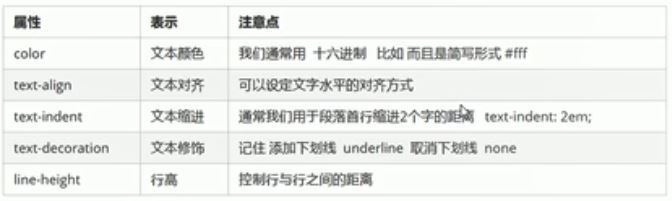

文本属性定义文本的外观，如颜色，对齐文本，装饰文本，缩进，行间距等
一：文本颜色三种表示：预定义颜色值，如red blue等;十六进制;RGB代码
二：对齐文本text-align：设置元素内文本内容的水平对齐方式,比如{text-align: center(或者left，right);}
三：装饰文本text-decoration用来添加删除线下划线等,比如{text-decoration: underline(或者line-through)}
例子：网页链接取消下划线：百度
四：text-indent用来指定文本的第一行缩进，通常是段落首行，格式{text-indent: 2em}
五：line-height用于设置文本的行间距
